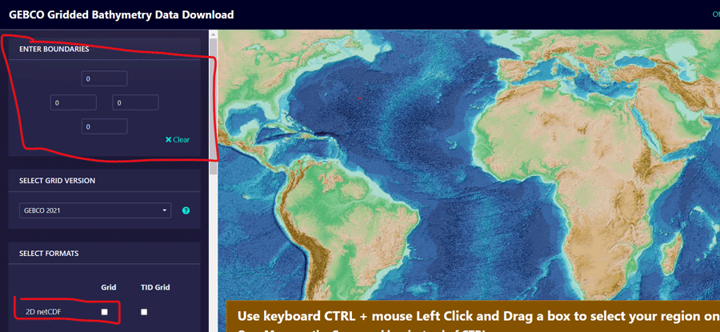

As an Oceanography, one key parameter that need to get right is the bathymetry. Bathymetry is the science of determining the topography of the seafloor. Bathymetry data is used to generate navigational charts, seafloor profile, biological oceanography, beach erosion, sea-level rise, etc. There prenty of bathymetry data and one of the them is the GEBCO Gridded Bathymetry Data.
The General bathymetric Chart of the Oceans (GEBCO) consists of an international group of experts in ocean mapping. This team provides the most authoritative publicly-available bathymetry of the world’s oceans. In this post i will illustrate how to download data from their website and use for mapping. You can obtain the data for your region of interest or for the global oceans. You can download the data from GEBCO .https://download.gebco.net/. For this case I have downloaded the data for East African Coast as netCDF file by specifying the geogrpahical extent and choose the file type as shown in figure ??.
knitr::include_graphics("../images/gebco.png")
To process the data and visualize in maps, we need several packages highlighted in the chunk below. You need to load the packages in your session first. If not in your machine, you need to install them first.
require(tidyverse)
require(ncdf4)
require(sf)
require(metR)Then read the file using nc_open function of the ncdf4 package and print the file to see the metadata that describe the variables that are embedded in the file.
nc = nc_open("d:/gebco_tz.nc")ncFile d:/semba/shapefile/gebco/gebco_2021_n2.0_s-15.0_w35.0_e50.0.nc (NC_FORMAT_CLASSIC):
1 variables (excluding dimension variables):
short elevation[lon,lat]
standard_name: height_above_mean_sea_level
long_name: Elevation relative to sea level
units: m
grid_mapping: crs
sdn_parameter_urn: SDN:P01::ALATZZ01
sdn_parameter_name: Sea floor height (above mean sea level) {bathymetric height}
sdn_uom_urn: SDN:P06::ULAA
sdn_uom_name: Metres
2 dimensions:
lat Size:4080
standard_name: latitude
long_name: latitude
units: degrees_north
axis: Y
sdn_parameter_urn: SDN:P01::ALATZZ01
sdn_parameter_name: Latitude north
sdn_uom_urn: SDN:P06::DEGN
sdn_uom_name: Degrees north
lon Size:3600
standard_name: longitude
long_name: longitude
units: degrees_east
axis: X
sdn_parameter_urn: SDN:P01::ALONZZ01
sdn_parameter_name: Longitude east
sdn_uom_urn: SDN:P06::DEGE
sdn_uom_name: Degrees east
36 global attributes:
title: The GEBCO_2021 Grid - a continuous terrain model for oceans and land at 15 arc-second intervals
summary: The GEBCO_2021 Grid is a continuous, global terrain model for ocean and land with a spatial resolution of 15 arc seconds.The grid uses as a 'base-map' Version 2.2 of the SRTM15+ data set (Tozer et al, 2019). This data set is a fusion of land topography with measured and estimated seafloor topography. It is augmented with gridded bathymetric data sets developed as part of the Nippon Foundation-GEBCO Seabed 2030 Project.
keywords: BATHYMETRY/SEAFLOOR TOPOGRAPHY, DIGITAL ELEVATION/DIGITAL TERRAIN MODELS
Conventions: CF-1.6, ACDD-1.3
id: DOI: 10.5285/c6612cbe-50b3-0cff-e053-6c86abc09f8f
naming_authority: https://dx.doi.org
history: Information on the development of the data set and the source data sets included in the grid can be found in the data set documentation available from https://www.gebco.net
source: The GEBCO_2021 Grid is the latest global bathymetric product released by the General Bathymetric Chart of the Oceans (GEBCO) and has been developed through the Nippon Foundation-GEBCO Seabed 2030 Project. This is a collaborative project between the Nippon Foundation of Japan and GEBCO. The Seabed 2030 Project aims to bring together all available bathymetric data to produce the definitive map of the world ocean floor and make it available to all.
comment: The data in the GEBCO_2021 Grid should not be used for navigation or any purpose relating to safety at sea.
license: The GEBCO Grid is placed in the public domain and may be used free of charge. Use of the GEBCO Grid indicates that the user accepts the conditions of use and disclaimer information: https://www.gebco.net/data_and_products/gridded_bathymetry_data/gebco_2019/grid_terms_of_use.html
date_created: 2021-07-01
creator_name: GEBCO through the Nippon Foundation-GEBCO Seabed 2030 Project
creator_email: gdacc@seabed2030.org
creator_url: https://www.gebco.net
institution: On behalf of the General Bathymetric Chart of the Oceans (GEBCO), the data are held at the British Oceanographic Data Centre (BODC).
project: Nippon Foundation - GEBCO Seabed2030 Project
creator_type: International organisation
geospatial_bounds: -180
geospatial_bounds: -90
geospatial_bounds: 180
geospatial_bounds: 90
geospatial_bounds_crs: WGS84
geospatial_bounds_vertical_crs: EPSG:5831
geospatial_lat_min: -90
geospatial_lat_max: 90
geospatial_lat_units: degrees_north
geospatial_lat_resolution: 0.00416666666666667
geospatial_lon_min: -180
geospatial_lon_max: 180
geospatial_lon_units: degrees_east
geospatial_lon_resolution: 0.00416666666666667
geospatial_vertical_min: -10977
geospatial_vertical_max: 8685
geospatial_vertical_units: meters
geospatial_vertical_resolution: 1
geospatial_vertical_positive: up
identifier_product_doi: DOI: 10.5285/c6612cbe-50b3-0cff-e053-6c86abc09f8f
references: DOI: 10.5285/c6612cbe-50b3-0cff-e053-6c86abc09f8f
node_offset: 1Looking on the metadata, we notice that there are three variables we need to extract from the file, these are longitude, latitude and depth. We use a ncvar_get function to extract them. Note the name of the variables, as they should be parsed in the function as they appear in the metadata.
lat = ncvar_get(nc, "lat")
lon = ncvar_get(nc, "lon")
bathy = ncvar_get(nc, "elevation")Then we can check the type of the file using a class function
class(bathy); class(lon); class(lat)[1] "matrix" "array" [1] "array"[1] "array"We notice these objects comes as array. we can check the size also
dim(lon); dim(lat);dim(bathy)[1] 3600[1] 4080[1] 3600 4080We also notice that while lon and lat object are array, but they are vector and only bathy is the matrix. Therefore, we need to make a data frame so that we can make plots using ggplot package, which only work in the dataset that is organized as data.frame or tibble. That can be done using a expand.grid function. First we expand the lon and lat file followed with the bathy and combine them to make a tibble as the chunk below highlight. Because of the file size, only bathymetric values that fall within the pemba Channel were selected.
dataset = expand.grid(lon, lat) %>%
bind_cols(expand.grid(bathy)) %>%
as_tibble() %>%
rename(lon = 1, lat = 2, depth = 3)%>%
filter(lon >38.5 & lon < 40.5 & lat > -5.8 & lat < -4)Separate the dataset into the land and ocean based on zero (0) value as reference point, where the above sea level topography values are assumed
land = dataset %>% filter(depth >0 )
ocean = dataset %>% filter(depth <= 0 )Load the basemap shapefile
africa = st_read("d:/africa.shp", quiet = TRUE)Make a color of land and depth that we will use later for mapping the topography and bathymetry, respectively.
#make palette
ocean.pal <- c("#000000", "#000413", "#000728", "#002650", "#005E8C", "#0096C8", "#45BCBB", "#8AE2AE", "#BCF8B9", "#DBFBDC")
land.pal <- c("#467832", "#887438", "#B19D48", "#DBC758", "#FAE769", "#FAEB7E", "#FCED93", "#FCF1A7", "#FCF6C1", "#FDFAE0")We can plot the bathymetry shown in figure ?? with the code highlighted in the chunk below
ggplot()+
metR::geom_contour_fill(data = ocean, aes(x = lon, y = lat, z = depth), bins = 120, global.breaks = FALSE) +
metR::geom_contour2(data = ocean, aes(x = lon, y = lat, z = depth, label = ..level..), breaks = c(-200,-600), skip = 0 )+
scale_fill_gradientn(colours = ocean.pal, name = "Depth (m)", breaks = seq(-1800,0,300), label = seq(1800,0,-300))+
ggspatial::layer_spatial(data = africa)+
coord_sf(xlim = c(38.9,40), ylim = c(-5.6,-4.1))+
theme_bw(base_size = 12)+
theme(axis.title = element_blank())
Similary, we can plot togopgraphy of the area shown in figure ?? using the code shown below
ggplot()+
metR::geom_contour_fill(data = land, aes(x = lon, y = lat, z = depth), bins = 120, show.legend = TRUE) +
metR::geom_contour2(data = land, aes(x = lon, y = lat, z = depth), breaks = c(200), skip = 0 )+
scale_fill_gradientn(colours = land.pal, name = "Topography", trans = scales::sqrt_trans())+
ggspatial::layer_spatial(data = africa, fill = NA)+
coord_sf(xlim = c(38.9,40), ylim = c(-5.6,-4.1))+
theme_bw(base_size = 12)+
theme(axis.title = element_blank())